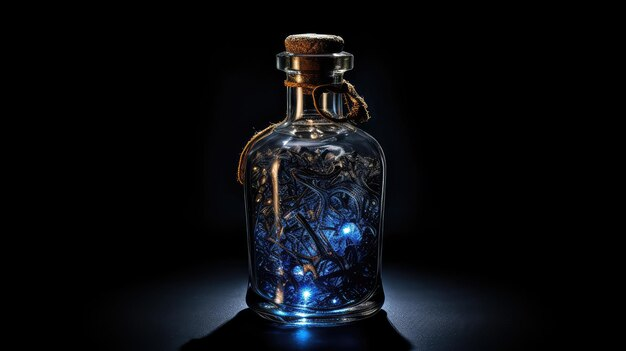

Está cansado de nunca ter a solução para tudo?
Então compre a nossa solução mágica para todos os seus problemas!
A Poção de Cura Regenerativa é uma fórmula mágica especialmente criada para ajudar os gnomos a curar feridas e recuperar energia vital de forma rápida e eficaz. A poção é composta por extratos de flores curativas e raízes ancestrais misturadas com um toque de mel mágico que acelera a cicatrização.
A Poção Estimulante de Cogumelos é uma mistura exótica e poderosa destinada a energizar e estimular a mente e o corpo dos gnomos. Essa poção é composta por uma combinação única de cogumelos mágicos colhidos nos mais profundos bosques encantados, além de uma variedade de ervas medicinais que crescem nas margens dos riachos cristalinos.
ATENÇÃO!
Gnomos com sensibilidade a cogumelos ou ervas específicas devem consultar um curandeiro antes de usar qualquer poção. O uso excessivo pode levar à agitação e fadiga mental.